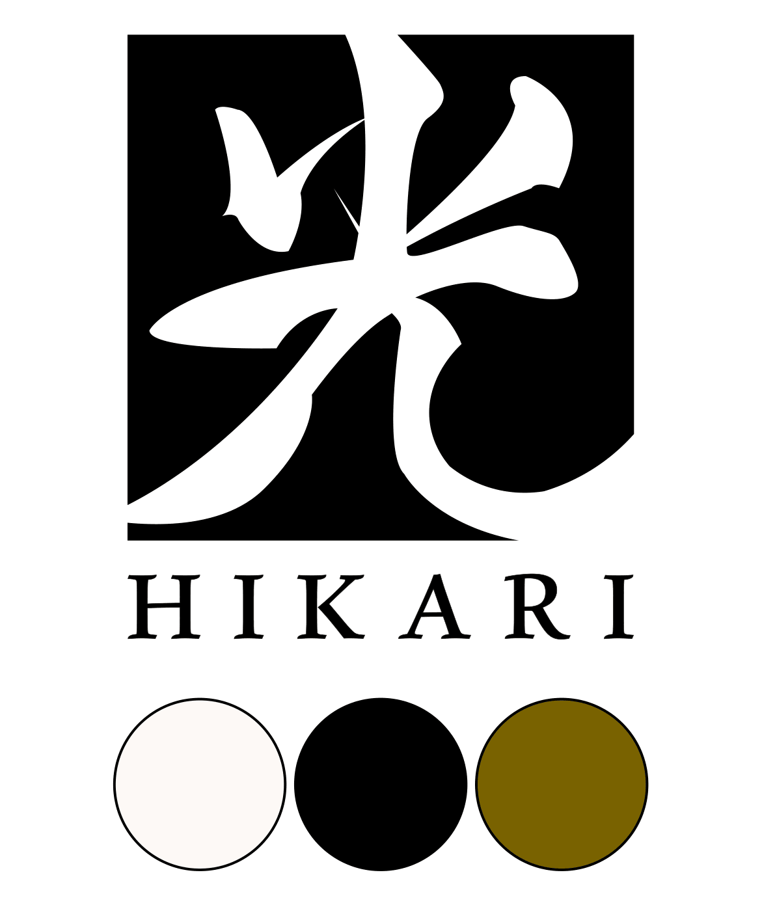

Étude de marché

Veille, benchmark & diagnostic
Comprendre le marché
avant de créer
Mise en place d'un système de veille structuré (concurrentielle, sociétale, commerciale) et benchmark de 3 concurrents directs : Asphalte (précommande, discours anti-surproduction), LEAD (streetwear manga, social-first) et Figurine Manga France (catalogue large, SEO transactionnel).
Construction de 2 personas cibles (Nassur, 32 ans, fan de culture japonaise en quête de premium discret ; Marina, 28 ans, orientée consommation responsable) et d'une matrice SWOT complète pour valider la pertinence d'une niche "mode premium inspirée manga", quasi inexistante en France/Europe.
Veille stratégique
Benchmark concurrentiel
Personas
SWOT